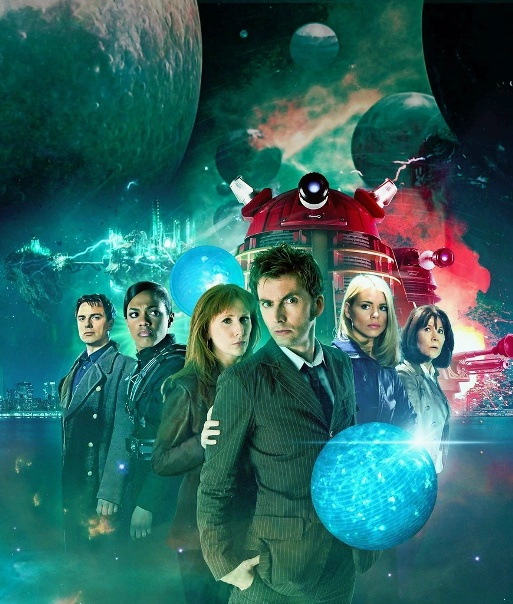

Эра Десятого Доктора (4 сезон)
<<< НАЗАД ||| 12. Украденная Земля ||| ДАЛЬШЕ >>>
MVO [TVShows] 2.0 + 5.1, MVO [Кириллица], MVO [Канал Sci-Fi], MVO [Baibako], DVO [Канал НТС], VO [rz]
+ Original [ENG]
Субтитры: Русские {TrueTransLate} и Английские
 Оригинальная версия | Все серии сезона в одном видео * без приквелов, мини-эпизодов и спецвыпусков |
The Stolen Earth
Дата выхода: 28 июня 2008
Формат: 45-минутный эпизод
| Варианты озвучек: | * Разные: смотрите по инструкции |
|---|---|
| Скачивание и просмотр: |
Действие серии начинается сразу после окончания «Поверни налево». Земля пропадает прямо из-под ТАРДИС, не оставляя ни следа. Доктор обращается за помощью к межгалактической полиции — Прокламации теней. Выясняется, что одновременно с Землёй пропали ещё 26 планет, среди которых Каллуфракс Второй, Джаху, Шаллакатоп, Женский плач и Клом, и ещё три пропали давно: Адипоуз-3, луна Пуш и Пайровиллия. Донна упоминает про сообщения о пропаже пчёл, что наводит Доктора на мысль о шкале Тандокки — практически неуловимом сигнале. Его след приводит ТАРДИС к центру разлома во времени и пространстве — Каскаду Медузы. Однако тут след заканчивается, но планет вокруг нет.


Трейлер: